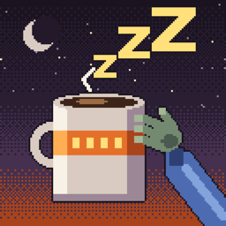

Privacy policy
Last updated: 27 November 2026 · Help and contact
In short: Rushzzz collects, stores and shares no personal data. The game works fully offline and makes no network connections.
1. Controller
Babak Armani, Gundeldingerrain, 4059 Basel, Switzerland
E-mail: click-number-01@pm.me
This policy follows the Swiss Federal Act on Data Protection (FADP) and, where applicable, the EU General Data Protection Regulation (GDPR).
2. What the app stores
Your progress (levels, stars, crew, upgrades, records) and your settings are saved only on your device. They are not sent to us or anyone else, and deleting the app deletes them.
3. What the app does not do
There is no account, no advertising, no analytics, no tracking and no third-party SDK. The game never asks for access to your contacts, photos, location, camera or microphone, and it makes no network connections.
4. Apple
Apple handles the download, updates and, if you have agreed to share them, crash reports and usage statistics, under Apple’s own privacy policy. We only see this information in anonymous, aggregated form.
5. Contact and changes
For questions about this policy, write to the address above. If the policy changes, the new version is published on this page with a new date.
Kurz: Rushzzz erhebt, speichert und teilt keine Personendaten. Das Spiel läuft komplett offline und baut keine Netzwerkverbindungen auf.
1. Verantwortlicher
Babak Armani, Gundeldingerrain, 4059 Basel, Schweiz
E-Mail: click-number-01@pm.me
Diese Erklärung folgt dem Schweizer Datenschutzgesetz (DSG) und, soweit anwendbar, der EU-Datenschutz-Grundverordnung (DSGVO).
2. Was die App speichert
Dein Fortschritt (Level, Sterne, Crew, Upgrades, Rekorde) und deine Einstellungen werden nur auf deinem Gerät gespeichert. Sie werden weder an uns noch an Dritte gesendet und mit der App gelöscht.
3. Was die App nicht tut
Es gibt kein Konto, keine Werbung, keine Analyse, kein Tracking und keine Fremd-SDKs. Das Spiel fragt nie nach Zugriff auf Kontakte, Fotos, Standort, Kamera oder Mikrofon und baut keine Netzwerkverbindungen auf.
4. Apple
Apple wickelt den Download, Updates und, wenn du der Weitergabe zugestimmt hast, Absturzberichte und Nutzungsstatistiken nach Apples eigener Datenschutzerklärung ab. Wir sehen diese Angaben nur anonym und zusammengefasst.
5. Kontakt und Änderungen
Fragen zu dieser Erklärung an die obige Adresse. Ändert sich die Erklärung, erscheint die neue Fassung mit neuem Datum auf dieser Seite.